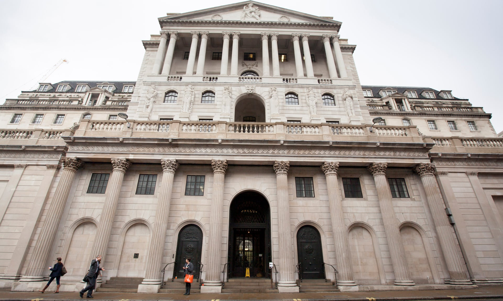

Bank of England asks banks if they are ready for negative interest rates
Lenders asked what steps they would take if official borrowing costs were pushed below zero
The Bank of England has moved a step closer to adopting negative interest after writing to banks asking them how ready they would be for the groundbreaking move.
Sam Woods, one of Threadneedle Street’s deputy governors, has asked banks what steps they would need to take in the event that official borrowing costs were pushed below zero.
Woods said: “For a negative bank rate to be effective as a policy tool, the financial sector – as the key transmission mechanism of monetary policy – would need to be operationally ready to implement it in a way that does not adversely affect the safety and soundness of firms.”
Although Woods said his letter was not an indication that the Bank would adopt negative interest rates for the first time in its 326-year history, he made it clear that officials needed to know whether there were operational or technological challenges involved in such a move.
What would negative interest rates mean for UK consumers?
+ Show“As part of this work, we are requesting specific information about your firm’s current readiness to deal with a zero bank rate, a negative bank rate, or a tiered system of reserves remuneration – and the steps that you would need to take to prepare for the implementation of these.”
The Bank cut interest rates to 0.1% at the start of the Covid-19 crisis and has been looking into the possibility of following the example of other central banks, such as the European Central Bank, which have deployed negative rates for some time.
In the past, Threadneedle Street has been cautious about pushing interest rates below zero, due to concerns that doing so would harm the profitability of high street banks and lead to a backlash from savers. Banks make profits by charging a higher rate of interest to borrowers than they do to savers, and traditionally it has been thought that negative rates would lead to a narrowing of this “spread”.
In the second Citizen’s Panel open forum held by the BoE on Monday, Andrew Bailey, the Bank’s governor, said the pandemic meant negative rates should be considered as part of its “tool kit” but that did not mean they would be used by Threadneedle Street.
He said that while several other central banks used negative rates, including the European Central Bank and the Bank of Japan, they mostly offered them to large corporations and there were only a few cases of high street lenders offering negative mortgages.
Bailey conceded that without their widespread adoption by mortgage lenders, “it limits the impact of the policy”.
Woods set a deadline for 12 November – a week after the Bank’s nine-strong monetary policy committee next meets – for banks to respond.
Financial markets are betting on the Bank eventually adopting negative interest rates next spring, but think the MPC’s next move will be an expansion of its quantitative easing programme, whereby it creates money through the purchase of government and commercial bonds.
“We recognise that a negative policy rate could have wider implications for your firm’s business and your customers”, Woods said in his letter. “The Bank and the prudential regulation authority will consider the wider business implications, including on financial stability, safety and soundness of authorised firms and pass-through to the wider economy.”